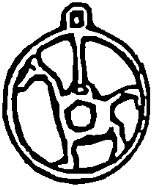

On dakika sonra bir taksi içinde, Avcılar’a doğru hızla yol alıyorlardı. Yolda sırf konu olsun diye bu temizlikçilerin onu nasıl bulduklarını, internette canlı yayın işinin nasıl olduğunu sordu Çiçek’e. Aaa, hani Unomastik’ten Kral Bayram Abi varmış ya, o haber vermiş temizlikçilere, “böyle şahane bir ev yok valla, aramayın, daha iyisini bulamazsınız” demiş. Sonra gelişmiş olay. Tankut, Bayram’a ağır bir küfür savurdu.
Ambarlı-Küçük Çekmece yolu üzerinde, sahile çok yakın bir yerde metruk görünüşlü bir blok önünde indiler. Sağında solunda, neredeyse yıkık durumdaki çatlak patlak evlerde hâlâ insanlar yaşıyor. Bu apartman ise komşularına göre çok daha sağlam olmasına karşın mühürlenmiş. İçinde de kimse yok. Bazı fedakâr ev sahipleriyse, müthiş paralar filan harcayarak, evlerindeki çatlakları sıva ile kapatıp, dıştan güzel bir boya attırmışlar ki kiraya verebilsinler. Tankut, bu renk renk boyanmış gıcır evlerin de komşuları kadar sakatta olduğunu bilemezdi tabii.
Ana kapıdaki mührü koparmak için hazırlandığında yanıldığını anlayarak şaşırdı. Bir telin ucunda sallanan bozuk para büyüklüğünde aptal bir kurşun parçası olan mühür zaten kopuktu. Tankut, kapıyı itti. Apartman girişinde üs kuran tinerci çocuklar bıçaklarına davrandılar. Tankut irkildi, geriledi. Çocukların önüne bir avuç dolusu para attı. Dışarıdaki eşyaları taşırlarsa daha çok vereceğini söyledi.
Silkinip düşlerinden uyanan çocuklar dışarı çıktıklarında. Çiçek, birkaç meraklı komşuya canlı çekim yapılacağını söylüyordu. Tinercileri ellerinde bıçaklar, çakılarla koşarak üzerlerine gelir durumda gören meraklılar anında kayboldular. Minnettarlık duygularıyla dolan Tankut, utanmasa küçük fedailerinin alınlarından tek tek öpecekti. Meraklılar arasında en önde kaçışan ve terliğinin tekini arkada bırakan şişman sakallının haline dayanamadı güldü.
Birkaç kişilik bir çocuk grubu, bütün torbaları anneannenin hemen ikinci katta olan dairesine taşıdı. Tankut, her birine yirmişer milyon verdi. Ocağın yakan soğuğuna karşın kolsuz pis fanilalar içinde olan zavallıcıklar, çığlıklar atarak, birbirlerini ezerek yalın ayaklarıyla karanlık merdivenlere koştular.
Tankut’un biraz zamana ihtiyacı vardı. “Seksi” bir kılık giymesi için Çiçek’i odalardan birine gönderdi. Rüzgâr hızıyla, getirdiği kameraları güya kritik yerlere kurdu. İşini yeni bitirmişti ki, bir kapı gıcırtısı duyuldu, Çiçek, el kadar siyah bir bikini giymiş, bütün vücudu soğuktan nokta nokta ürpererek gülümsüyor, ona bakıyordu. Soğuk, yıllardır ısıtılmamış, içinde eşya namına hiçbir şey olmayan, tozlu, çatlak duvarlı, elektriği ve suyu kesik bir zavallı evde, bikinili bir Çiçek, Tankut’un sinirine dokundu. Hele kızın –çalışmasalar da– bir kameranın önünden diğerine gitmesi, dudaklarını büzerek eliyle öpücükler göndermesi, kendi bacaklarını, kalçalarını okşayarak birtakım müstehcen hareketler yapması Tankut’un üst dudağının istem dışı seğirmesine neden oldu. Milletin erkeklerine ne olduğunu pek aklına getirmeden, “Ulan ne ettiler bu milletin karılarını?” diye düşündü. Hırladı:
“Çiçek, anlaşma saat üçte başlıyor. Daha çekimde değiller.”
“Ay, şekerim, söylesene, ne diye Allah’ın bu soğuğunda cici kılığımı şimdiden giydiriyorsun Tankut? Aaa, deli mi ne ayol? Bu arada, Tankut, sen bugün bir şey yapmıştın ama neydi canım, hatırlamıyorum...”
Kız yine aynı odaya girdi, kayboldu.
Tankut, salonun bir köşesine sağda solda bulduğu gazeteleri, getirdiği poşetleri açıp yayarak, oturacak bir yer yaptı. Doğru, mühürlenmiş bir eve kimse bakmazdı ama burası da pek yaşanacak bir yer gibi durmuyordu. Suyu kesik, elektriği olmayan buz gibi bir evde ne kadar dayanabilirlerdi? İşini bitirdi. Duvarın soğukluğuna sırtını yaslayarak oturdu. Çiçek de üstüne daha uygunca, daha kalın bir şeyler giymiş olarak geri döndü. Bir şey söylemeksizin erkeğin yanına geçti. Sırtını duvara, başını Tankut’un sol omzuna dayadı. Tankut’un kulağına fısıldayarak,
“Tankut’um çaktırma, gerçi bir açık vermedik ama bunlar çekime başlamış! Kameraların vızıltısını duyuyorum. Benden kaçmaz. Artık uzmanlaştım... Yoo...”
Tankut’un şaşkın bakışları içinde, eliyle farkında olmaksızın Tankut’u iterek, dehşet içinde fırladı, ayağa kalktı.
“Yoo, bu kamera değil! Bu Şeftan... Benimle konuşmak istiyormuş! Özlemiş beni! Hayır, artık seni istemiyorum Şeftan... Benim Tankut’um yanımda... Hayır, sen artık Şeftan değilsin! Sadece Şefsin. Defol... pislik... pis şey, su düşmanı seni!”
Tankut kızı sakinleştirdi. Sol elinden çekerek yine yanma, bu kez sağ tarafına oturttu. Çiçek, önce korka korka sonra rahatlamış bir şekilde yere oturdu.
Tankut, “bu kaçıkla ne yapacağım ben?” diye düşündü. Yüzüne bir gülücük yerleştirdi. Biraz da konu değişsin, laf olsun gibilerinden sordu:
“Yav, Çiçek, nasıl oluyor da bu evden daha kötü durumda evlerde insanlar yaşıyor da bunda kimse oturmuyor, mühürlenmiş?”
Çiçek ağır ağır, uykulu bir sesle anlattı. 1999 depreminde insanlar daha göçükler içinden çıkarılmadan, necip milletimizin en necip bölümü olan mal sahipleri, canlarının yongası derdine düşmüşler. Göçükten göçüğe atlayan bir haber, devletin ağır hasarlı her ev için yeni bir ev vereceği yolundaymış. Herkes evinin ağır hasarlı olduğunu söyleyerek “oturulamaz” raporu almaya koşuşmuş. Bazı aşırı heveslilerin az hasarlı evlerine balyozlarla, çekiçlerle saldırdığı bile görülmüş! Çünkü hem bu evlerini tutacaklarmış hem de yeni ev alacaklarmış. Depremden çıkan piyango buymuş. Her deprem sonrası ortaya çıkan dayanışma ruhu içinde, az hasarlı evler bile ağır hasarlı raporu almış. Sonra plan yatmış. Yeni bir haber çıkmış, bir kişinin isterse yüz evi yıkılmış veya ağır hasarlı olsun, karşılığında ancak bir kalıcı konut alabilecekmiş. O da hemen değilmiş. Bu haber kesinleşince, bu kez gerçekten ağır hasarlı, oturulamaz durumdaki evlerin sahipleri bile koşuşturmuş, vur-tut evlerine bu kez “az hasarlı” raporu almışlar. Aynı evler, bu becerikli, işbilir, sahibini düşünür, milli ekonomiyi zarara uğratmaz, hesaplı, akıllı Türk evleri, mucize kabilinden bir gece içinde kendilerini tamir etmiş, oturulabilir duruma gelmişler! Durum medyamıza yansıyınca da, kahraman yetkililerimiz olaya el koymuşlar. Şu içinde oturdukları ev gibi bazı sahte “az hasarlı” raporuna sahip evleri tespit etmiş, mührü vurmuş, Nuh demiş peygamber dememişler. İçindeki insanlar da sağa sola dağılmış, kiracılardan bazıları kiralar makul diye hemen yanı başlarındaki “oturulabilir” durumdaki evlere taşınmışlar. Tuhaf bir biçimde, buraların raconuna göre, çatlakları ortada olan evlerin kirası daha yüksek, boyanmış, sıvanmış evlerinki daha düşükmüş.
Tankut, bu öyküyü duyunca dışarıya çıkmak, sokaklarda bağıra bağıra dolaşarak insanları uyarmak, “deprem olacak, kaçın!” demek istedi. Bir kez daha davalarının, yani davasının ne kadar haklı olduğunu anladı. Şimdi bir araştırma yapılsa bu sahtekâr ev sahiplerinin, bu yolsuzluk müptelası yetkililerin nasıl bir Sabetaycı çeteye ait oldukları gün gibi ortaya çıkacaktı. Bu tip kötülükleri insan olan, kendi halkına yapmaz ya! Sırf bu davadan dönmesi, yeni açılımlar aramaya başlaması bile Argun’un ortadan kaldırılmasını haklı göstermeye yetmez miydi? Hayal Taşı filan bahane!